Event Manager Free
Introduction
Event Manager Free is the open-source edition of our event management and ticketing platform built with Laravel. It lets you create and publish single events, sell tickets online via Stripe, manage bookings, and run your site from a modern admin dashboard.
Some admin settings (Classic Light theme, seat plans, recurring/custom schedules, early-bird pricing, add-on services, PDF ticket field customization, attendee forms, and extra payment gateways) are preview-only in this edition. PDF tickets still generate and download with the default layout. Online checkout uses Stripe only. Upgrade to Event Manager Plus to unlock the full product.
Free vs premium
| Feature | Free | Premium |
|---|---|---|
| Public site theme | Default & Classic | Classic Light and more |
| Event schedule | Single event (preview recurring/custom) | Recurring & custom dates |
| Early bird pricing | Preview only | Per-ticket discounted windows |
| Additional services | Preview only | Sell add-ons at checkout |
| Seat plans | Preview only | Full seat layout & booking |
| PDF tickets | Printable (settings preview only) | Per-event customization |
| Attendee form settings | Preview only | Per-ticket fields |
| Online payments | Stripe | Stripe, PayPal, Razorpay, SSLCommerz |
| Offline payments | Preview only | Cash & bank transfer |
What You Get
- Complete Laravel source code
- Web-based installation wizard (
/install) - Admin dashboard at
/admin - Public event listing, booking, blog, and CMS pages
- Stripe online payments (PayPal, Razorpay, SSLCommerz, cash, and bank transfer in premium)
- PDF ticket generation and download with QR codes (custom fields in premium)
- Seat planner preview in admin (full booking in premium)
- AI report assistant and event assistant (optional)
your-domain.com/admin/login using the administrator credentials you set during setup.
Features
Server Requirements
Before installing, ensure your server meets the following requirements. The web installer will also verify these automatically.
| Requirement | Details |
|---|---|
| PHP | 8.2 or higher |
| Database | MySQL 5.7+ or MariaDB 10.3+ |
| Web Server | Apache with mod_rewrite or Nginx |
| Composer | Required for dependency installation |
| Node.js & npm | Required only if you rebuild frontend assets (npm run build) |
Required PHP Extensions
- ctype, fileinfo, json, mbstring, openssl, pdo, tokenizer, xml
- pdo_mysql (for MySQL/MariaDB database connection)
Writable Directories
storage/and all subdirectoriesbootstrap/cache/public/uploads/(created automatically for media uploads).envfile (or ability to create it from.env.example)
APP_DEBUG=false and APP_ENV=production in .env after installation. The web installer does this automatically.
File Structure
Key directories and files you should know about:
EventManagerLaravel/
├── app/ # Application logic (controllers, models, services)
├── bootstrap/ # Framework bootstrap & cache
├── config/ # Configuration files
├── database/
│ ├── migrations/ # Database schema
│ └── seeders/ # Default data (admin user, settings)
├── public/ # Web root (point your domain here)
│ ├── index.php # Front controller
│ ├── documentation/ # This documentation
│ │ └── assets/images/ # Screenshots used in this guide
│ ├── themes/ # Frontend theme assets
│ └── uploads/ # User-uploaded images
├── resources/views/ # Blade templates
├── routes/web.php # Application routes
├── storage/ # Logs, cache, sessions (must be writable)
├── .env # Environment configuration (created on install)
├── .env.example # Environment template
├── artisan # CLI commands
└── composer.json # PHP dependenciespublic/ folder. If you cannot change the document root, use the included root .htaccess file which redirects requests to public/.
Installation — Web Installer
The recommended way to install Event Manager Free is through the built-in web installer.
-
Upload files
Upload all project files to your server. Ensure
storage/andbootstrap/cache/are writable (chmod 755 or 775). -
Install Composer dependencies
SSH into your server and run:
cd /path/to/your/project composer install --no-dev --optimize-autoloaderFor local development you may omit
--no-dev. -
Create database
Create an empty MySQL or MariaDB database and note the host, port, database name, username, and password.
-
Open the installer
Visit
https://your-domain.com/installin your browser. The installer checks PHP version, extensions, and folder permissions. -
Configure the application
On the setup page, enter:
- Application name and URL (must match exactly how users access the site, including
https://and port if any) - Administrator name, email, and password
- Database connection details (MySQL or MariaDB)
Optionally check "Erase existing tables" only if you are reinstalling on a database that already has old tables from a previous install.
- Application name and URL (must match exactly how users access the site, including
-
Complete installation
Click Run installation. The installer will write
.env, run migrations, seed default data, and lock the installer. Save the admin credentials shown on the completion screen. -
Sign in
Go to
https://your-domain.com/admin/loginand sign in with your administrator account.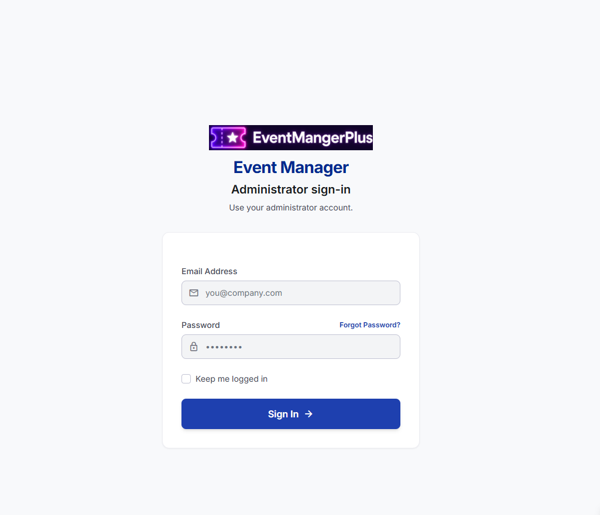
Administrator sign-in at /admin/login
/install/finish directly. Always submit the form from the setup page. If you see a "Page Expired" (419) error, go back to /install/setup and try again.
Installation — Manual (CLI)
If you prefer command-line installation or the web installer is unavailable:
cd /path/to/your/project
composer install
cp .env.example .env
php artisan key:generateEdit .env and set at minimum:
APP_NAME="Event Manager Free"
APP_URL=https://your-domain.com
APP_ENV=production
APP_DEBUG=false
DB_CONNECTION=mysql
DB_HOST=127.0.0.1
DB_PORT=3306
DB_DATABASE=your_database
DB_USERNAME=your_username
DB_PASSWORD=your_password
ADMIN_NAME="Admin User"
ADMIN_EMAIL=admin@example.com
ADMIN_PASSWORD=your_secure_passwordThen run migrations and seeders:
php artisan migrate --force
php artisan db:seed --force
php artisan install:lockThe install:lock command creates the install lock file so the web installer stays disabled on an already-configured site.
Build Frontend Assets (Optional)
Pre-built assets are included. Rebuild only if you modify CSS/JS:
npm install
npm run buildServer Configuration
Apache
Point the document root to the public/ directory. Ensure mod_rewrite is enabled. The included public/.htaccess handles URL rewriting.
If the app is in a subfolder (e.g. http://localhost/EventManagerLaravel/), uncomment and set RewriteBase in the root .htaccess:
# RewriteBase /EventManagerLaravel/Nginx
server {
listen 80;
server_name your-domain.com;
root /path/to/project/public;
add_header X-Frame-Options "SAMEORIGIN";
add_header X-Content-Type-Options "nosniff";
index index.php;
charset utf-8;
location / {
try_files $uri $uri/ /index.php?$query_string;
}
location = /favicon.ico { access_log off; log_not_found off; }
location = /robots.txt { access_log off; log_not_found off; }
error_page 404 /index.php;
location ~ \.php$ {
fastcgi_pass unix:/var/run/php/php8.2-fpm.sock;
fastcgi_param SCRIPT_FILENAME $realpath_root$fastcgi_script_name;
include fastcgi_params;
}
location ~ /\.(?!well-known).* {
deny all;
}
}APP_URL
APP_URL in .env must match the exact URL visitors use (scheme, host, and port). Payment return URLs and signed links depend on this value.
# Correct examples:
APP_URL=https://yourdomain.com
APP_URL=http://127.0.0.1:8000Admin Panel
Access the admin dashboard at /admin/login. After signing in, you will see the main navigation:
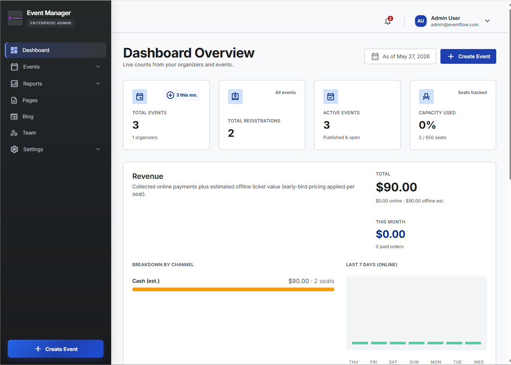
| Section | Description |
|---|---|
| Dashboard | Overview of events, bookings, and recent activity |
| Events | Create, edit, publish events; manage tickets, media, speakers |
| Event Categories | Organize events by category |
| Organizers | Manage event organizer profiles |
| Speakers | Reusable speaker profiles linked to events |
| Blog | Publish blog posts on the public site |
| Pages | Static CMS pages (About, Terms, etc.) |
| Team | Staff accounts, roles, and module access |
| Reports | Classic report filters and CSV export; optional AI report |
| Report AI | Natural-language queries over booking data |
| Event Assistant | AI helper for drafting event content |
| Settings | Site, email, payments, and AI configuration |
Settings Sections
- Site — Public theme, logo, favicon, seat planner toggle, contact details
- Home — Homepage SEO, hero image, how-it-works, FAQs, and contact copy
- Admin — Admin panel branding (logo)
- Email — SMTP host, port, credentials, from address
- Payments — Enable/disable gateways and enter API keys
- AI Reports — Configure AI provider for Report AI and Event Assistant
Events List
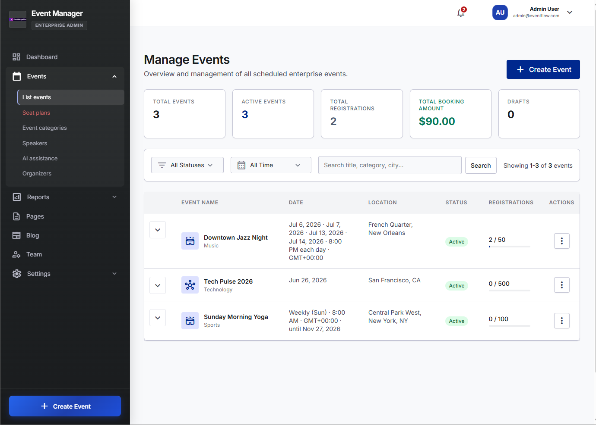
Reports
Use Reports → Classic report to filter registrations and group orders by event, organizer, dates, payment status, and check-in. Export results to CSV when needed.
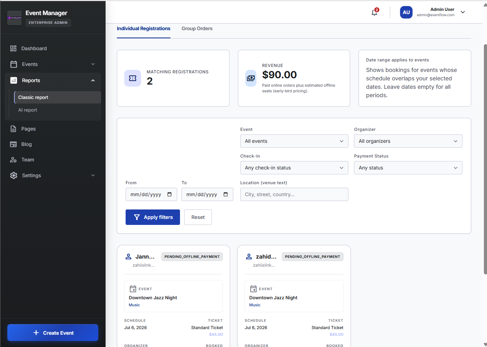
Blog & Pages
Create blog posts and static pages with a title, slug, rich-text body, hero image, and SEO meta fields.
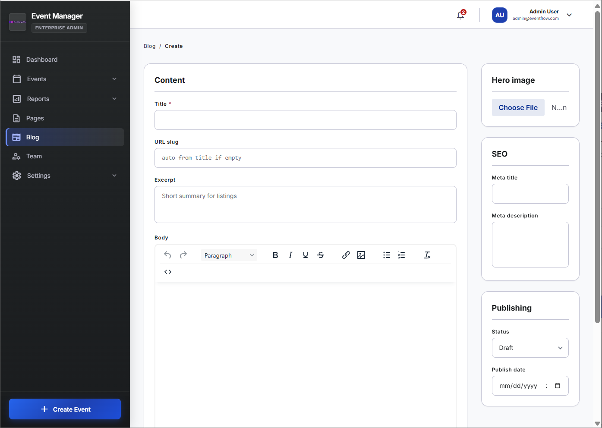
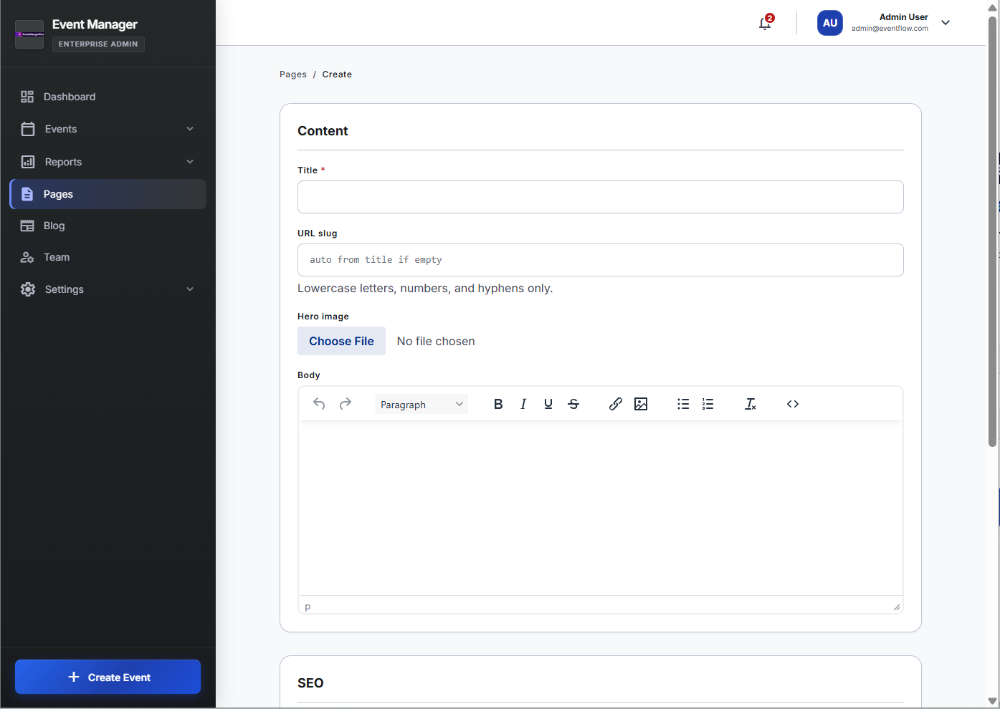
Team (Staff)
Under Team, add staff users, assign roles, and control which modules each role can access.
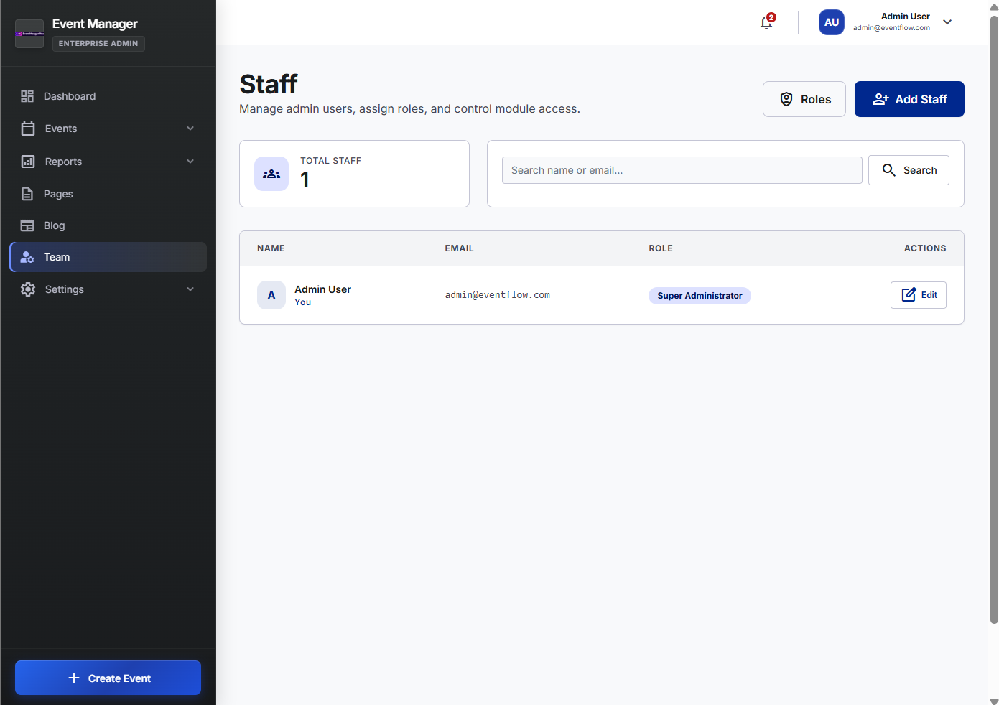
Managing Events
Events are created through a four-step wizard in the admin panel (Events → + Create Event or the sidebar button):
- Basic info — Title, visibility, schedule (single, recurring, or custom dates), organizer, category, speakers, and location type (venue, virtual, or hybrid)
- Ticketing — Ticket types, pricing, quantities, early bird, sales end, and optional add-on services
- Content — Hero image, gallery, FAQs, description, and SEO meta
- Advanced — Confirmation email template, tax rules, per-customer limits, seat plan toggle, PDF ticket fields, then publish
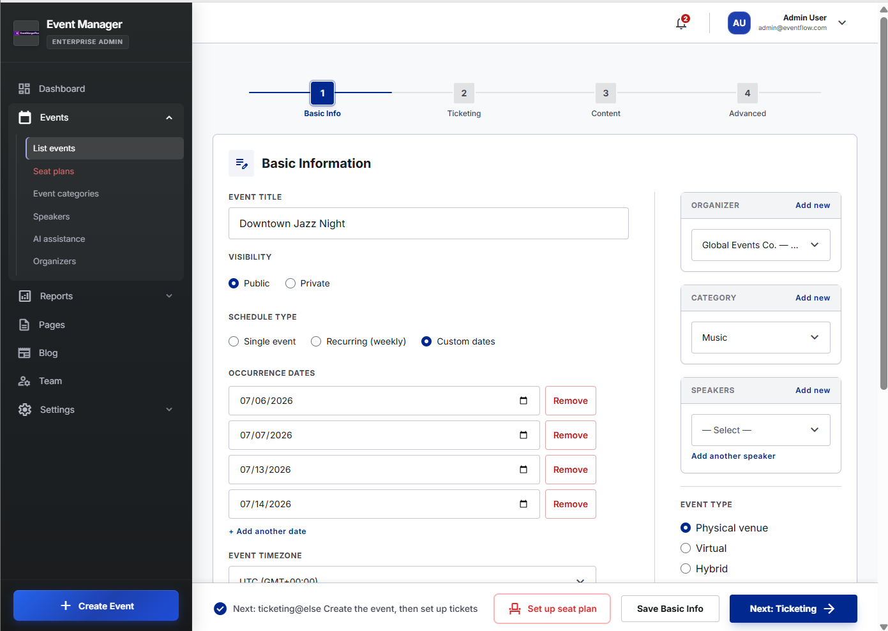
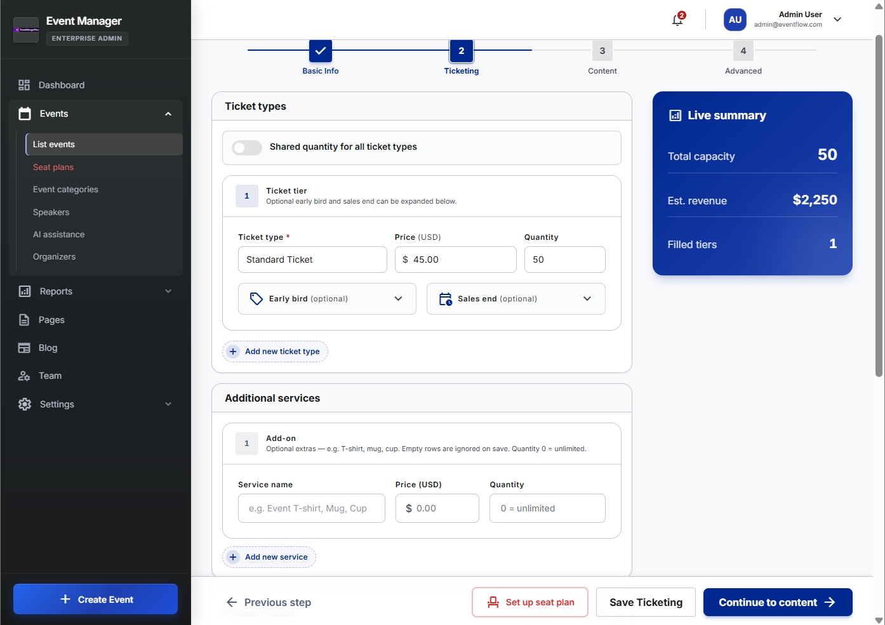
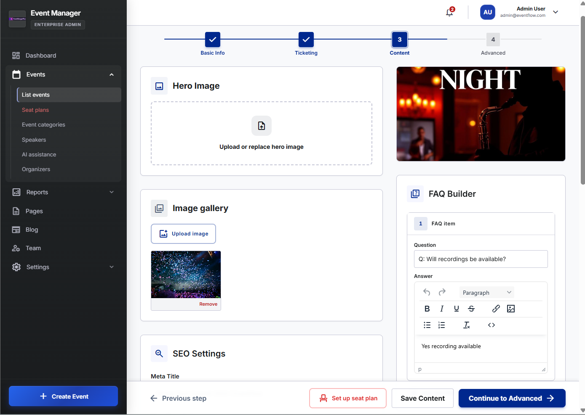
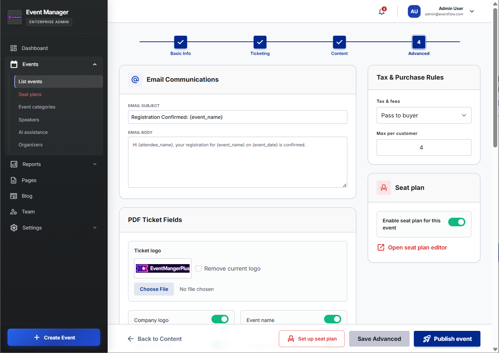
Publishing
Save as draft or click Publish to make the event visible on the public site at /events/{slug}.
Bookings & Check-in
- View all bookings per event from the admin event bookings page
- Manually register attendees from the admin panel
- Each booking has a unique check-in URL token for scanning at the door
- Customers receive PDF tickets with QR codes after successful payment
Ticket PDF Customization
Per event, configure which fields appear on the PDF ticket (event name, attendee details, seat number, QR code, etc.) and upload an optional ticket logo.
Payment Gateways
Configure payments under Admin → Settings → Payment settings. Enable only the gateways you need.
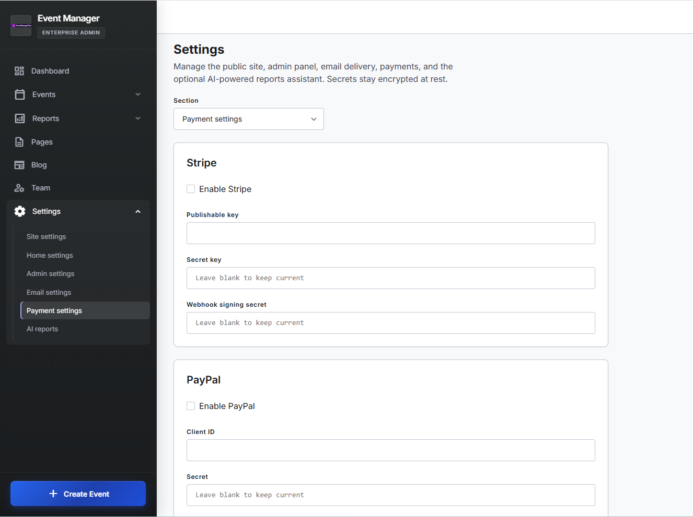
Stripe
- Create a Stripe account at stripe.com
- Enable Stripe in admin settings and enter your Publishable key and Secret key
- For reliable payment confirmation, set up a webhook:
- Stripe Dashboard → Developers → Webhooks → Add endpoint
- URL:
https://your-domain.com/stripe/webhook - Events:
checkout.session.completed(and related checkout events as needed) - Copy the Signing secret into admin settings
PayPal
- Create a PayPal Developer app at developer.paypal.com
- Enter Client ID and Secret
- Set mode to Sandbox for testing or Live for production
PAYPAL_CACERT_PATH in .env to its absolute path.
Razorpay
- Create a Razorpay account at razorpay.com
- Enter Key ID and Key Secret in admin settings
- Enable Razorpay; customers are redirected to a signed payment page
SSLCommerz
- Register at sslcommerz.com
- Enter Store ID, Store Password, and set Sandbox/Live mode
- Configure success, fail, cancel, and IPN URLs in your SSLCommerz merchant panel to match your domain routes
Offline Payments
- Cash — Customers select cash payment; booking awaits manual confirmation
- Bank transfer — Display your bank instructions; customers complete transfer offline
Email (SMTP)
Configure outgoing mail under Admin → Settings → Email settings:
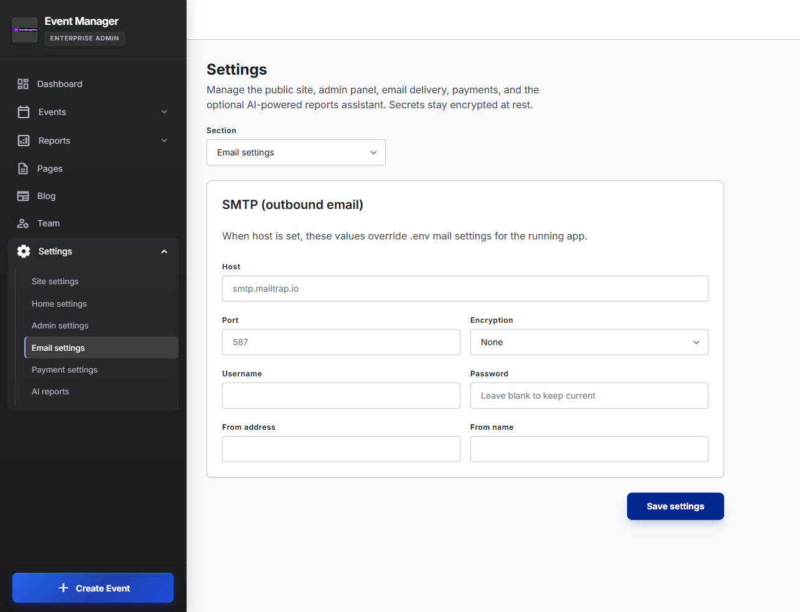
| Field | Example |
|---|---|
| SMTP Host | smtp.gmail.com |
| SMTP Port | 587 (TLS) or 465 (SSL) |
| Encryption | tls or ssl |
| Username / Password | Your SMTP credentials |
| From Address | noreply@yourdomain.com |
Booking confirmation emails are sent when registrations are confirmed. Per-event email subject and body can be customized in the event content settings.
For development, you may set MAIL_MAILER=log in .env to write emails to the log file instead of sending them.
Seat Planner
Seat planning is available in Event Manager Plus (premium). In the free edition, seat plan settings are shown as preview-only in the admin panel.
Enable Site-wide
Go to Admin → Settings → Site settings and enable Seat plan. This allows seat planning features across the application.
Enable Per Event
On the event Advanced step, turn on Enable seat plan for this event, then open the seat plan editor (or use Events → Seat plans).
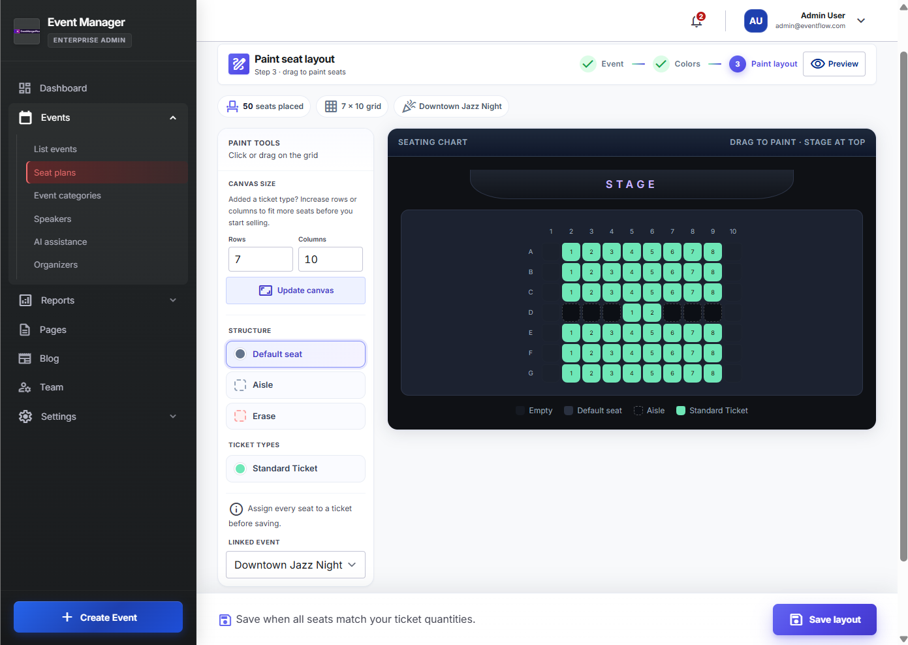
Selected seat numbers appear on bookings, PDF tickets, and check-in screens.
AI Features
Report AI and Event Assistant use a configurable AI provider. Set this up under Admin → Settings → AI reports.
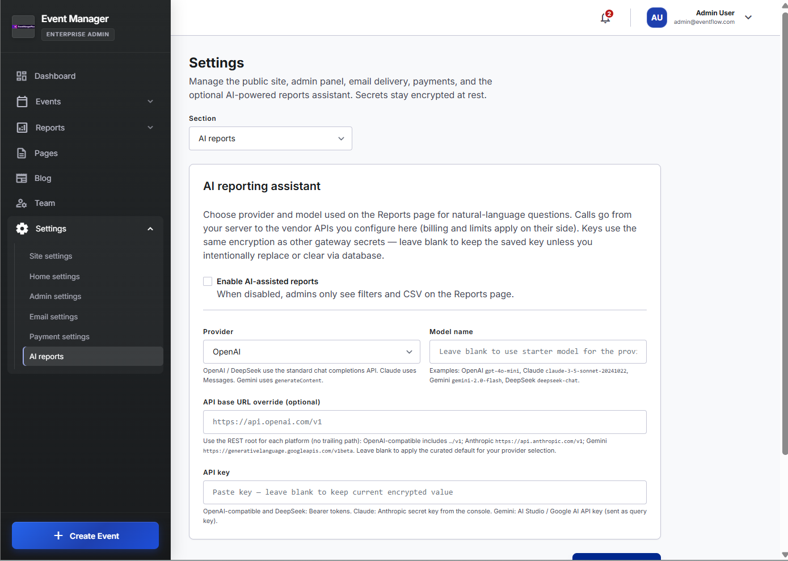
Supported Providers
| Provider | Default API Base |
|---|---|
| OpenAI | https://api.openai.com/v1 |
| DeepSeek | https://api.deepseek.com |
| Anthropic (Claude) | https://api.anthropic.com/v1 |
| Google (Gemini) | https://generativelanguage.googleapis.com/v1beta |
Configuration Steps
- Enable Report AI in settings
- Select your provider and enter your API key
- Optionally set a custom model name and API base URL override
- Use Reports → AI report to ask questions about orders and bookings
- Use Events → AI assistance to generate or refine event descriptions and content

Customer Account
Visitors can register at /register and sign in at /login. Logged-in customers can:
- View order history at
/account - Download ticket PDFs for their bookings
- Update profile information
Guest checkout is also supported — customers can book without an account and receive tickets by email.
Frontend Themes
Switch the public site appearance under Admin → Settings → Site settings → Public site theme:
- Default — Modern minimal landing layout
- Classic — Eventify-style homepage with hero, how-it-works, and FAQs
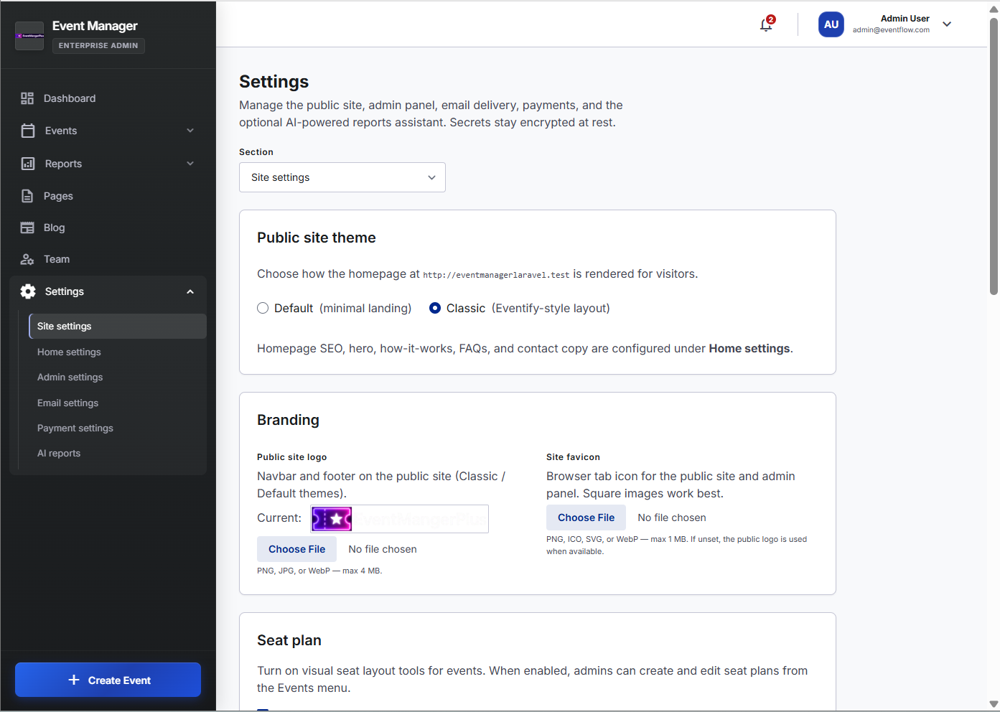
Homepage SEO, hero background, copy, and FAQs are configured separately under Home settings:
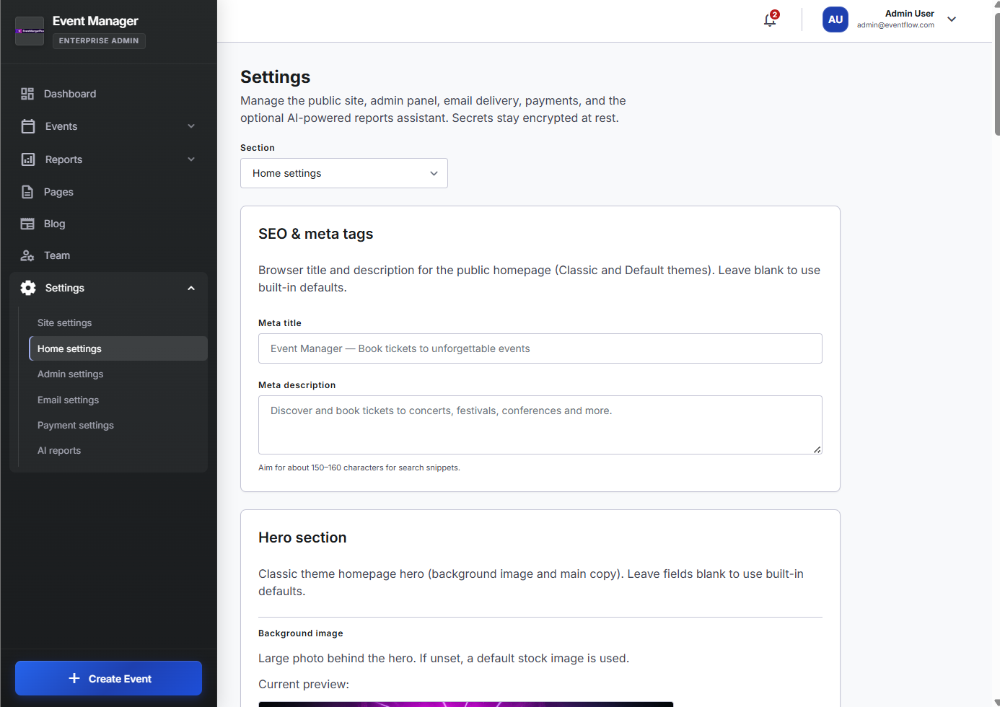
Theme assets live in public/themes/. Customize CSS files there if needed.
Cron Jobs & Queues
By default, the application uses synchronous queue processing (QUEUE_CONNECTION=sync), which works without a cron job for most sites.
If you enable database queues for high-volume sites, add this cron entry:
* * * * * cd /path/to/project && php artisan schedule:run >> /dev/null 2>&1And run a queue worker (via Supervisor or similar):
php artisan queue:work --tries=3After installation, you may optionally switch in .env:
SESSION_DRIVER=database
CACHE_STORE=database
QUEUE_CONNECTION=databaseThese require that migrations have already been run (the installer handles this).
Troubleshooting
500 Internal Server Error
- Check
storage/logs/laravel.logfor details - Ensure
storage/andbootstrap/cache/are writable - Run
php artisan config:clearandphp artisan cache:clear
419 Page Expired (during install)
- Go to
/install/setupand submit the form again (do not refresh/install/finish) - Ensure
APP_KEYis set in.env
CSS/JS not loading
- Confirm document root points to
public/ - Run
npm run buildif assets are missing
Payment redirect fails
- Verify
APP_URLmatches your live URL exactly - For Stripe, confirm webhook URL and signing secret
- For PayPal on Windows, set
PAYPAL_CACERT_PATH
Images not uploading
- Check PHP
upload_max_filesizeandpost_max_size - Ensure
public/uploads/is writable
Re-run installer
Delete the install lock file at storage/app/install.lock (path may vary) to access /install again. Only do this on a fresh or test environment.
FAQ
Can I use SQLite?
The web installer requires MySQL or MariaDB. For development, you may configure SQLite manually in .env and run migrations via CLI.
How do I change the admin password?
Sign in to the admin panel and update your profile, or change the user record directly in the database.
Where are uploaded files stored?
Uploaded images are stored under public/uploads/ and referenced from the database.
Is the installer accessible after setup?
No. Once installation completes, an install lock file is created and the installer routes are blocked. Use php artisan install:lock for manual deployments.
Can I translate the application?
Language files are in lang/. The default locale is English (en). Set APP_LOCALE in .env and add translation files as needed.
Changelog
Version 1.0 — Initial Release
- Event management with recurring and custom schedules
- Multi-gateway payments (Stripe, PayPal, Razorpay, SSLCommerz, offline)
- PDF tickets with QR codes and check-in
- Seat planner integration
- Blog, CMS pages, organizers, speakers
- Admin reports with CSV export and AI assistant
- Web installer, customer accounts, dual frontend themes
Support & Credits
Getting Help
For support with the free edition, open an issue on GitHub. For the full commercial product, visit LucrativeIt.
- Your purchase code
- PHP version and hosting environment
- Steps to reproduce the issue
- Relevant lines from
storage/logs/laravel.log(remove sensitive data)
Third-Party Packages
| Package | Purpose |
|---|---|
| Laravel Framework | Application framework |
| barryvdh/laravel-dompdf | PDF ticket generation |
| endroid/qr-code | QR codes on tickets |
| stripe/stripe-php | Stripe payments |
| razorpay/razorpay | Razorpay payments |
| lucrativeit/laravel-seat-planner | Seat selection |
License
Event Manager Free is released under the MIT License. Event Manager Plus is a separate commercial product from LucrativeIt.